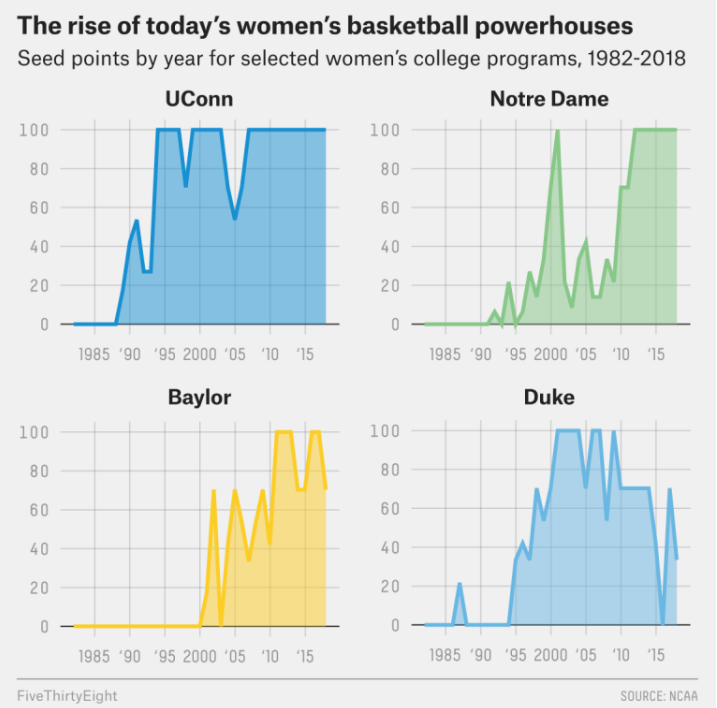
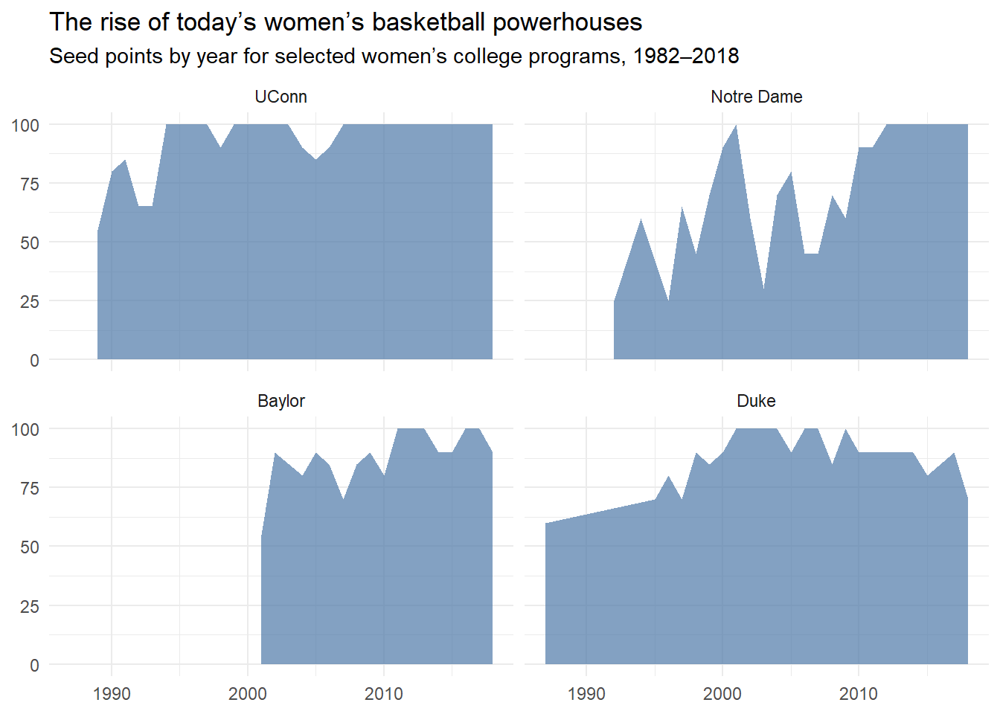
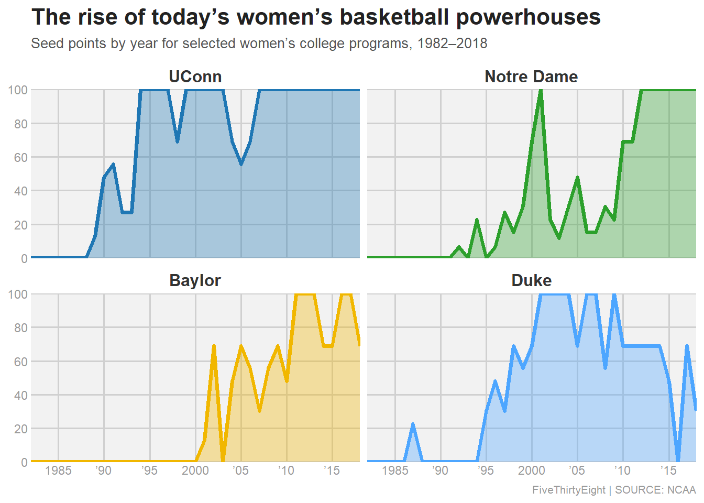

library(here)here() starts at C:/Users/PC/Documents/GitHub/SaraaAljawad-portfolioknitr::include_graphics(here("presentation-exercise","original.png"))
I am recreating the last figure shown in FiveThirtyEight’s article entitled,
“The Rise And Fall Of Women’s NCAA Tournament Dynasties.”
The original graphic visualizes seed point performance over time (1982–2018) for four dominant women’s college basketball programs: UConn, Notre Dame, Baylor, and Duke.
── Attaching core tidyverse packages ──────────────────────── tidyverse 2.0.0 ──
✔ dplyr 1.2.0 ✔ readr 2.1.6
✔ forcats 1.0.1 ✔ stringr 1.6.0
✔ ggplot2 4.0.1 ✔ tibble 3.3.1
✔ lubridate 1.9.5 ✔ tidyr 1.3.2
✔ purrr 1.2.1
── Conflicts ────────────────────────────────────────── tidyverse_conflicts() ──
✖ dplyr::filter() masks stats::filter()
✖ dplyr::lag() masks stats::lag()
ℹ Use the conflicted package (<http://conflicted.r-lib.org/>) to force all conflicts to become errorsWarning: One or more parsing issues, call `problems()` on your data frame for details,
e.g.:
dat <- vroom(...)
problems(dat)Rows: 2092 Columns: 19
── Column specification ────────────────────────────────────────────────────────
Delimiter: ","
chr (10): School, Seed, Conference, Conf. W, Conf. L, Conf. %, Conf. place, ...
dbl (9): Year, Reg. W, Reg. L, Reg. %, Tourney W, Tourney L, Full W, Full L...
ℹ Use `spec()` to retrieve the full column specification for this data.
ℹ Specify the column types or set `show_col_types = FALSE` to quiet this message.Rows: 2,092
Columns: 19
$ Year <dbl> 1982, 1982, 1982, 1982, 1982, 1982, 1982, 1982, 19…
$ School <chr> "Arizona St.", "Auburn", "Cheyney", "Clemson", "Dr…
$ Seed <chr> "4", "7", "2", "5", "4", "6", "5", "8", "7", "7", …
$ Conference <chr> "Western Collegiate", "Southeastern", "Independent…
$ `Conf. W` <chr> "-", "-", "-", "6", "-", "-", "-", "-", "-", "-", …
$ `Conf. L` <chr> "-", "-", "-", "3", "-", "-", "-", "-", "-", "-", …
$ `Conf. %` <chr> "-", "-", "-", "66.7", "-", "-", "-", "-", "-", "-…
$ `Conf. place` <chr> "-", "-", "-", "4th", "-", "-", "-", "-", "-", "-"…
$ `Reg. W` <dbl> 23, 24, 24, 20, 26, 19, 21, 14, 21, 28, 24, 17, 22…
$ `Reg. L` <dbl> 6, 4, 2, 11, 6, 7, 8, 10, 8, 7, 5, 13, 7, 5, 1, 6,…
$ `Reg. %` <dbl> 79.3, 85.7, 92.3, 64.5, 81.3, 73.1, 72.4, 58.3, 72…
$ `How qual` <chr> "at-large", "at-large", "at-large", "at-large", "a…
$ `1st game at home?` <chr> "Y", "N", "Y", "N", "Y", "N", "N", "N", "N", "N", …
$ `Tourney W` <dbl> 1, 0, 4, 0, 2, 0, 0, 0, 0, 0, 2, 0, 2, 1, 5, 3, 1,…
$ `Tourney L` <dbl> 1, 1, 1, 1, 1, 1, 1, 1, 1, 1, 1, 1, 1, 1, 0, 1, 1,…
$ `Tourney finish` <chr> "RSF", "1st", "N2nd", "1st", "RF", "1st", "1st", "…
$ `Full W` <dbl> 24, 24, 28, 20, 28, 19, 21, 14, 21, 28, 26, 17, 24…
$ `Full L` <dbl> 7, 5, 3, 12, 7, 8, 9, 11, 9, 8, 6, 14, 8, 6, 1, 7,…
$ `Full %` <dbl> 77.4, 82.8, 90.3, 62.5, 80.0, 70.4, 70.0, 56.0, 70…# prompt_1
schools <- c("UConn", "Notre Dame", "Baylor", "Duke")
plot_df_before <- df %>%
filter(School %in% schools) %>%
mutate(
Seed = as.integer(Seed),
seed_points = case_when(
is.na(Seed) ~ 0L,
Seed == 1 ~ 100L,
Seed == 2 ~ 90L,
Seed == 3 ~ 85L,
Seed == 4 ~ 80L,
Seed == 5 ~ 70L,
Seed == 6 ~ 65L,
Seed == 7 ~ 60L,
Seed == 8 ~ 55L,
Seed == 9 ~ 45L,
Seed == 10 ~ 40L,
Seed == 11 ~ 30L,
Seed == 12 ~ 25L,
Seed == 13 ~ 20L,
Seed == 14 ~ 10L,
Seed == 15 ~ 5L,
Seed == 16 ~ 0L,
TRUE ~ 0L
)
) %>%
select(Year, School, Seed, seed_points) %>%
mutate(School = factor(School, levels = c("UConn", "Notre Dame", "Baylor", "Duke")))
ggplot(plot_df_before, aes(x = Year, y = seed_points)) +
geom_area(fill = "#4E79A7", alpha = 0.7) +
facet_wrap(~School, ncol = 2) +
labs(
title = "The rise of today’s women’s basketball powerhouses",
subtitle = "Seed points by year for selected women’s college programs, 1982–2018",
x = NULL, y = NULL
) +
theme_minimal()
Attaching package: 'janitor'The following objects are masked from 'package:stats':
chisq.test, fisher.testlibrary(stringr)
d <- df %>%
clean_names() %>%
mutate(
seed_num = suppressWarnings(readr::parse_number(seed))
) %>%
filter(!is.na(seed_num)) %>%
filter(year >= 1982, year <= 2018)
wins_name <- names(d)[str_detect(names(d), "^(tourney|tournament).*w(in)?s?$|^(tourney|tournament)_w$")][1]
rec_name <- names(d)[str_detect(names(d), "(tourney|tournament).*(rec|record)")][1]
if (is.na(wins_name) && is.na(rec_name)) {
score_record_col <- function(x) {
if (!is.character(x)) return(0)
mean(str_detect(x, "^[0-9]+\\s*-\\s*[0-9]+$"), na.rm = TRUE)
}
rec_scores <- map_dbl(d, score_record_col)
best <- names(rec_scores)[which.max(rec_scores)]
if (max(rec_scores, na.rm = TRUE) >= 0.20) rec_name <- best
}
# Build tourney_wins
if (!is.na(wins_name)) {
d <- d %>% mutate(tourney_wins = as.numeric(.data[[wins_name]]))
} else if (!is.na(rec_name)) {
d <- d %>% mutate(tourney_wins = as.numeric(str_extract(as.character(.data[[rec_name]]), "^[0-9]+")))
} else {
stop(
"Tournament wins column not found."
)
}
# Expected wins by seed since 1994, then scaled so seed #1 = 100
seed_expect <- d %>%
filter(year >= 1994) %>%
group_by(seed_num) %>%
summarize(exp_wins = mean(tourney_wins, na.rm = TRUE), .groups = "drop") %>%
filter(!is.na(exp_wins))
exp1 <- seed_expect %>% filter(seed_num == 1) %>% pull(exp_wins)
if (length(exp1) == 0 || is.na(exp1) || exp1 == 0) stop("Couldn't compute expected wins for seed #1.")
seed_map <- seed_expect %>%
mutate(seed_points = 100 * exp_wins / exp1) %>%
select(seed_num, seed_points)
d_points <- d %>% left_join(seed_map, by = "seed_num")
# fill missing years with 0
plot_raw <- d_points %>%
mutate(
program = case_when(
school %in% c("UConn", "Connecticut") ~ "UConn",
school == "Notre Dame" ~ "Notre Dame",
school == "Baylor" ~ "Baylor",
school == "Duke" ~ "Duke",
TRUE ~ NA_character_
)
) %>%
filter(!is.na(program)) %>%
select(program, year, seed_points)
plot_df <- plot_raw %>%
group_by(program) %>%
complete(year = 1982:2018, fill = list(seed_points = 0)) %>%
ungroup() %>%
mutate(program = factor(program, levels = c("UConn", "Notre Dame", "Baylor", "Duke")))
# Plot
team_cols <- c(
"UConn" = "#1f77b4",
"Notre Dame" = "#2ca02c",
"Baylor" = "#f1b700",
"Duke" = "#4da6ff"
)
ggplot(plot_df, aes(x = year, y = seed_points)) +
geom_area(aes(fill = program), alpha = 0.35) +
geom_line(aes(color = program), linewidth = 1.4) +
facet_wrap(~ program, ncol = 2) +
scale_fill_manual(values = team_cols) +
scale_color_manual(values = team_cols) +
scale_y_continuous(limits = c(0, 100), breaks = seq(0, 100, 20), expand = c(0, 0)) +
scale_x_continuous(
limits = c(1982, 2018),
breaks = c(1985, 1990, 1995, 2000, 2005, 2010, 2015),
labels = c("1985", "’90", "’95", "2000", "’05", "’10", "’15"),
expand = c(0, 0)
) +
labs(
title = "The rise of today’s women’s basketball powerhouses",
subtitle = "Seed points by year for selected women’s college programs, 1982–2018",
x = NULL, y = NULL,
caption = "FiveThirtyEight | SOURCE: NCAA"
) +
theme(
panel.background = element_rect(fill = "#f2f2f2", color = NA),
plot.background = element_rect(fill = "white", color = NA),
panel.grid.major = element_line(color = "#d0d0d0", linewidth = 0.6),
panel.grid.minor = element_blank(),
axis.ticks = element_blank(),
axis.text = element_text(color = "#9a9a9a", size = 9),
strip.background = element_blank(),
strip.text = element_text(face = "bold", size = 12, color = "#333333"),
plot.title = element_text(face = "bold", size = 16, color = "#222222"),
plot.subtitle = element_text(size = 10, color = "#555555", margin = margin(b = 8)),
plot.caption = element_text(color = "#9a9a9a", size = 8, hjust = 1),
legend.position = "none"
)
I used ChatGPT to help me start the R code to copy the FiveThirtyEight graph.The first attempt produced a plot that looked similar but did not fully match the original, so I ask then to revised the code using a second prompt.
Prompt 1 “Here is the FiveThirtyEight NCAA women’s tournament CSV. Please write ggplot2 code to recreate the figure (seed points over time for UConn, Notre Dame, Baylor, and Duke, 1982–2018).”
-What I got was not fully correct. This used a manual (guessed) seed points conversion, so it wasn’t truly FiveThirtyEight’s “seed points.”
Prompt 2 “My first plot doesn’t match the original. I think FiveThirtyEight seed points are different is it based on expected tournament wins by seed (No. 1 seed = 100) and you should fill the missing years with 0. Please update the code”
This version fixed this by computing seed points from the dataset itself (average tournament wins by seed, scaled so a No. 1 seed = 100) and by filling missing years with 0 so the time series matches the original figure.
library(dplyr)
library(tidyr)
library(gt)
library(gtExtras)
dec_summary <- plot_df %>%
filter(seed_points > 0) %>% # keep only tournament years (non-zero)
mutate(
decade = case_when(
year >= 1982 & year <= 1989 ~ "1980s",
year >= 1990 & year <= 1999 ~ "1990s",
year >= 2000 & year <= 2009 ~ "2000s",
year >= 2010 & year <= 2018 ~ "2010s",
TRUE ~ NA_character_
)
) %>%
filter(!is.na(decade)) %>%
group_by(program, decade) %>%
summarize(decade_avg = mean(seed_points, na.rm = TRUE), .groups = "drop")
overall_summary <- plot_df %>%
filter(seed_points > 0) %>% # counts only years they made tournament (non-zero after fill)
group_by(program) %>%
summarize(
overall_avg = mean(seed_points, na.rm = TRUE),
tourney_appearances = n(),
.groups = "drop"
)
best_decade <- dec_summary %>%
group_by(program) %>%
slice_max(decade_avg, n = 1, with_ties = FALSE) %>%
ungroup() %>%
rename(best_decade = decade, best_decade_avg = decade_avg)
table_custom <- overall_summary %>%
left_join(best_decade, by = "program") %>%
arrange(desc(overall_avg)) %>%
transmute(
TEAM = program,
`Overall avg` = overall_avg,
`Best decade` = best_decade,
`Best decade avg` = best_decade_avg,
`Tournament appearances` = tourney_appearances
)
spark_df <- plot_df %>%
group_by(program) %>%
arrange(year) %>%
summarize(Trend = list(seed_points), .groups = "drop")
table_custom <- table_custom %>%
left_join(spark_df, by = c("TEAM" = "program")) %>%
relocate(Trend, .after = TEAM)
gt(table_custom) %>%
tab_header(
title = md("**Program summary from seed-points (1982–2018)**")
) %>%
tab_caption(
md("**Table:** Overall and best-decade seed-point summaries for the four highlighted programs.")
) %>%
cols_label(Trend = "Trend") %>%
fmt_number(columns = c(`Overall avg`, `Best decade avg`), decimals = 1) %>%
tab_style(
style = cell_text(weight = "bold"),
locations = cells_body(columns = TEAM)
) %>%
gt_plt_sparkline(column = Trend, same_limit = TRUE) %>%
data_color(
columns = c(`Overall avg`, `Best decade avg`),
method = "numeric",
palette = c("#fee5d9", "#fcae91", "#fb6a4a", "#cb181d")
) %>%
tab_spanner(
label = "Seed points (0–100)",
columns = c(`Overall avg`, `Best decade avg`)
) %>%
tab_source_note(
source_note = md("*This table summarizes the same seed-points values used in the recreated figure. Higher values indicate stronger average seeding.*")
)| Program summary from seed-points (1982–2018) | |||||
| TEAM | Trend |
Seed points (0–100)
|
Best decade | Tournament appearances | |
|---|---|---|---|---|---|
| Overall avg | Best decade avg | ||||
| UConn | 84.4 | 100.0 | 2010s | 30 | |
| Baylor | 68.5 | 83.9 | 2010s | 17 | |
| Duke | 68.4 | 89.4 | 2000s | 24 | |
| Notre Dame | 52.5 | 93.1 | 2010s | 25 | |
| This table summarizes the same seed-points values used in the recreated figure. Higher values indicate stronger average seeding. | |||||
Overall, UConn has the strongest and most consistent seeding across 1982–2018, while Baylor and Duke show similar overall strength but peak in different decades (Baylor in the 2010s, Duke in the 2000s), and Notre Dame has the lowest overall average but a strong rise in the 2010s.
AI used for help in this exercise